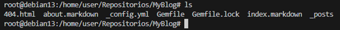
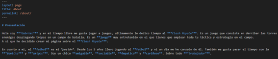
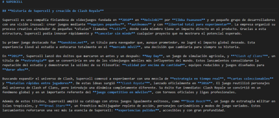
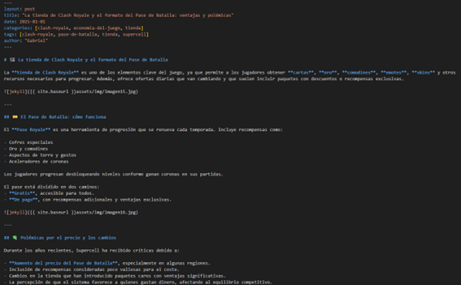

Documentación Ejercicio1 Guía creación de sitio de web en Jekyll
Paso 1

El primer paso sera crear el sitio web de Jekyll, para ello utilizamos el comando "jekyll new --force", y se nos creara la página web de Jekyll dentro de la carpeta MyBlog tambien podemos anteriormente iniciar esta carpeta como un repositiorio remoto conectado a Github para crear dentro de este el sitio web.

Podemos comprobar con ls que se ha creado todos los archivos y ficheros de Jekyll dentro del repositorio
Paso 2

Ahora configuramos el archivo "_config.yml", y dentro cambiaremos varias cosas:
-
El título: ponemos el titúlo que queramos
-
Email: pondremos una email nuestro, en mi caso el email de educantabria
-
Descripción: pondremos una breve descripción del blog
-
Baseurl: ponemos la ruta donde se encuentra el blog
-
Url: ponemos la url de nuestro Github
-
Github_username: ponemos el usuario de nuestra cuenta de Github
Cerramos y guardamos el archivo. Ahora pasaremos a la parte de configurar los archivos del sitio web, index.md, about.md, etc.
Paso 3

Vamos con el fichero de "about.markdown", en este fichero creamos una presentacion nuestra, hablando de nosotros y de nuestras aficiones. Este fichero una vez dentro del sitio web de Jekyll, aparecerá arriba a la derecha.

Ahora configuramos el fichero "index.markdown", este fichero sera el principal de la página donde se vera la estructura de la página, accederas a los post, enlaces, fotos, etc.
En mi caso como mi página va a ser sobre el Clash Royale, pues he puesto un pequeña introduccion sobre el juego con un par de fotos para que sea atractivo

Como tenemos que crear un tercer fichero, he decidido crear uno donde se hable de la historia de Clash Royale y de Supercell, que es la empresa que ha creado el juego
Paso 4

Ahora vamos con los post de la página. Crearemos tres nuevos post que tendrán que ver con el contenido de la página web. En mi caso, un post explicara todo acerca del juego, como jugar, cartas, cofres, gemas, etc. En el segundo post hablaré sobre el mundial de Clash Royale, y por último, en el tercer post hablaré de las polémicas que ha tenido con el precio de las cosas dentro del juego
Paso 5

Aquí podemos ver un ejemplo de post, en este caso el de las polémicas, podemos ver que su estructura es muy sencilla
Comprobación
Ahora después de realizar todo comprobamos que vaya bien nuestro sitio web, para ello ejecutamos "bundle exec jekyll serve --host "IP Host""